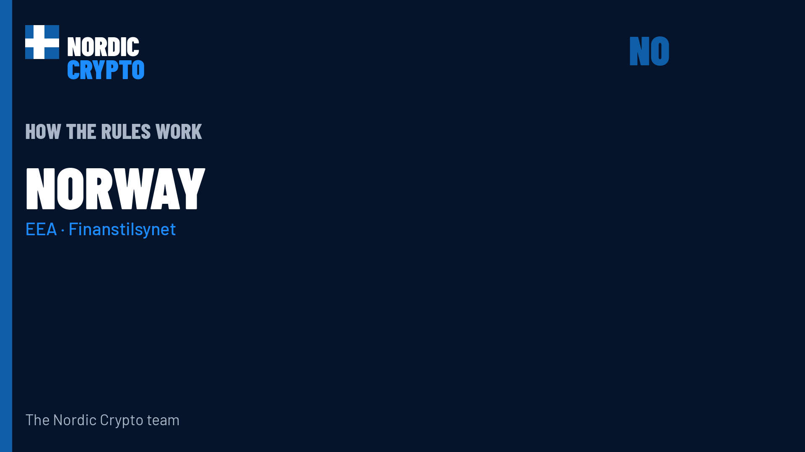

Sådan bliver kryptoreglerne afgjort i Norge

Fortællernoter
Good evening. This is Nordic Crypto. Tonight: how crypto and bitcoin rules are decided and enforced in Norway.
Norway and Iceland are in the European Economic Area, not the EU. MiCA reaches them through the EEA Agreement, then national law.
MiCA applies in Norway through the EEA Agreement, given effect by the Crypto-Assets Act from 1 July 2025.
In Norway, Finansdepartementet prepares the financial-markets bills. Stortinget adopts the national acts. The national law that shapes crypto supervision here is the Crypto-Assets Act: Lov om kryptoeiendeler (LOV-2025-05-27-20).
Finanstilsynet is the financial supervisor that licences and oversees crypto-asset service providers under MiCA. Norges Bank oversees payment systems and studies central-bank digital currency; it is not the MiCA licensing authority.
Suspicious transactions are reported to the financial intelligence unit: Økokrim. Tax on crypto-assets is handled by Skatteetaten. Disputes and appeals go to the ordinary courts (tingrett, lagmannsrett, Høyesterett).
Six CASPs authorised by Finanstilsynet as of 3 Oct 2026: Týr Markets, Firi, K33 Markets, Bare Bitcoin, NBX and AK Jensen Norway. A temporary ban on new power-intensive crypto data centres is being studied but not adopted.
That is how the rules work in Norway. For the full map across Norway, Sweden, Denmark, Finland and Iceland, with a source for every step, see the Nordic Crypto rules page. Nothing here is legal advice. The Nordic Crypto team. Good night.